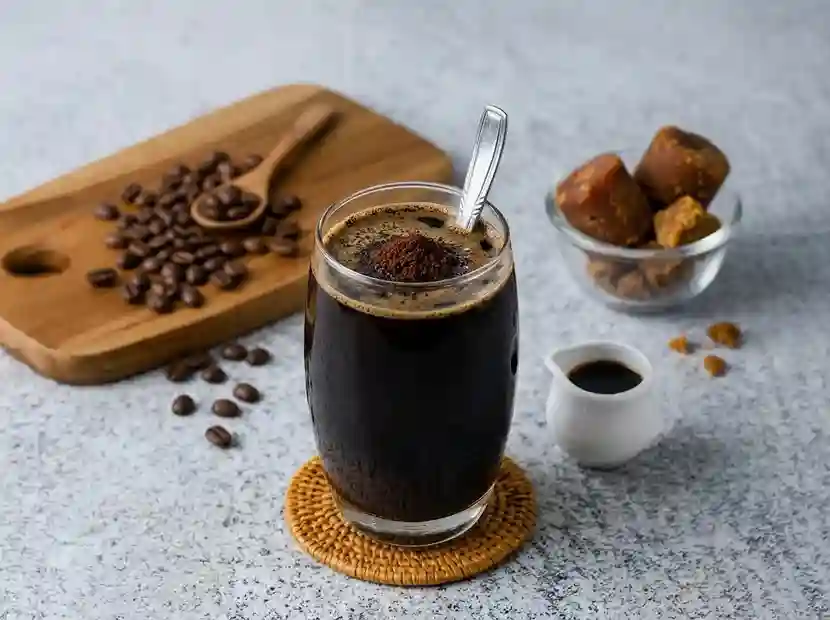
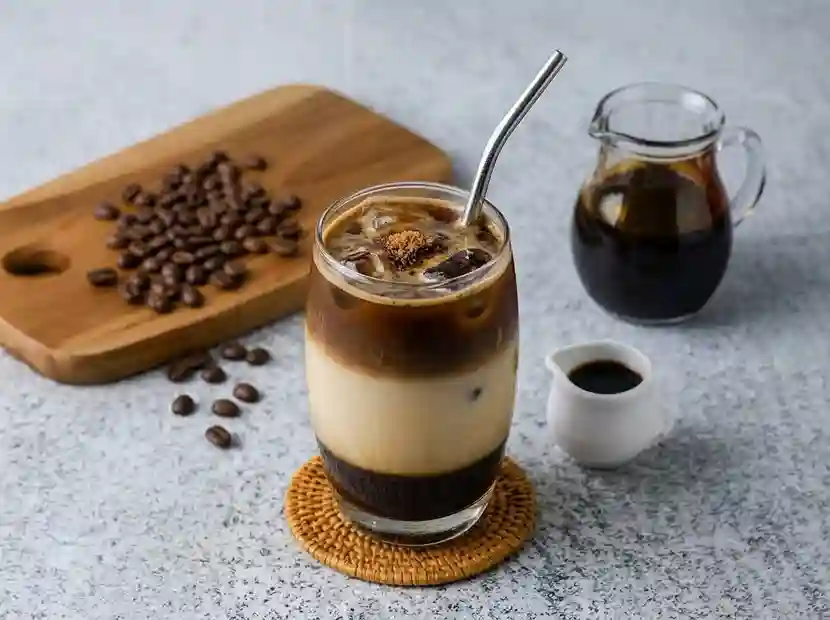

Pilih produk sesuai kebutuhan seduh harian, kantor, atau hadiah.
Kategori Produk
Paket seduh rumahan
Paket kantor mingguan
Paket tester untuk pelanggan baru
Menu Produk

Kopi Tubruk Signature — racikan biji kopi pilihan khas nusantara dengan seduhan
tradisional yang pekat, disajikan dalam gelas 250 ml seharga Rp18.000.Cold Brew Aren — kopi seduh dingin yang disaring 12 jam, dipadu gula aren asli,
disajikan dalam gelas 250 ml seharga Rp22.000.Choco Regal Creamy — coklat belgian rich dan susu segar dengan taburan biskuit
Regal, disajikan dalam gelas 250 ml seharga Rp20.000.Baru

Kopi Susu Gula Aren (menu terbaru) — memadukan espresso, susu segar, dan gula
aren asli, disajikan dalam gelas 250 ml seharga Rp25.000.